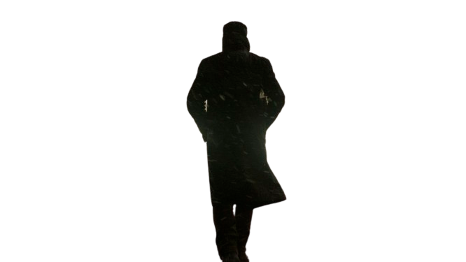

-

Blade Runner 2049
Blade runner 2049 starring Ryan Gosling is a sequal of the 1982 Blade runner starring Harrison Ford. Blade runner got a score of 88% in Rotten Tomatoes and an 8/10 in IMDb which is pretty good, not the best but not the worst.
The End of Evangelion
A sequal to the famous Anime Evangelion, which conclude the Anime in a single movie.
Predator
An action movie starring Arnold Schwarzenegger in 1987.